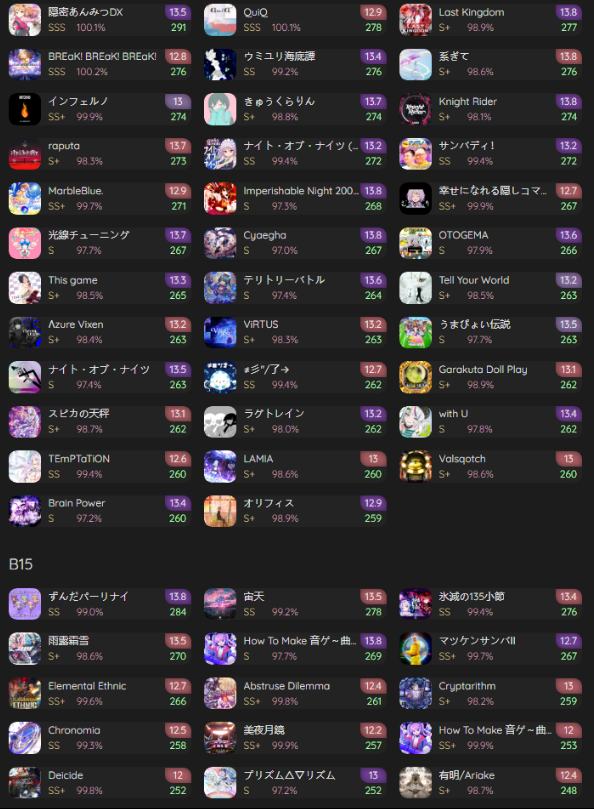
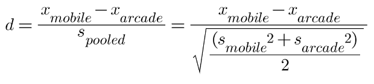

Is there a difference in my skill between on an arcade cabinet and on a mobile device in maimai DX?
maimai でらっくす (English: maimai Deluxe, maimai DX) is a Japanese rhythm game developed by Sega. Players tap, slide, and interact with a touchscreen and buttons to the beat of any of the game’s one thousand songs. Each song is scored based on timing accuracy, and players receive a “rating” based on how accurately they timed their inputs in their performance. These ratings contribute to a player’s overall でらっくす RATING (DX Rating), with harder songs and better performances contributing to higher ratings.
With this experiment, I aim to compare my skill across two different platforms: one on the actual arcade cabinet, and one on a mobile device through the KanadeDX platform. Although the two song sets consisting of my best 50 plays from each platform are not identical, I have chosen them as they reflect my competitive peak and are somewhat similar in difficulty. The key question for this test is,
Before answering the question, we must first lay out what procedure we are using, as well as identify the needed hypotheses. Naturally, our confidence level α = 0.01. Since I want to discuss a set of numbers, I chose to use a two-sample t-test. In order to also get a scale as to how big of a difference exists, I also chose to calculate the Cohen’s d coefficient.
Defining the hypotheses is simple:
The alternative hypothesis was ordered this way as I have a comparatively high playtime in KanadeDX than on an official arcade cabinet, and I want to see how much of a difference there is.
The numbers in the bottom left of each box for the first image are the ratings for each song on arcade cabinets. For the second image, the rating numbers for mobile are the green numbers in the bottom right of each box.
Let’s look at the conditions required for this test to work properly:
1. The samples are picked at random.
Although not randomly selected in a formal experimental sense, the 50 ratings on each platform were all selected based on the highest rated performances, and thus are representative of peak skill on each platform.
2. The samples are independent of each other in their platform, and are independent of each other in the other platform.
Due to the nature of the game, all samples (in this case, songs) are independent of each other on a single platform. However, there are some songs that overlap between the platforms; for example, 宙天 (Expert 13.5) can be seen as the highest rated “New” performance in the first image, and the second-highest “New” performance in the second image. Although this overlap is somewhat minimal, the overall set size are large (as will be explained); thus, we proceed with the two-sample t-test, but may have somewhat conservative results.
3. The samples are approximately Normal.
Since both groups have sample sizes of 50, which is greater than the size of 30 required for the use of the Central Limit Theorem, the samples are approximately Normal.
To proceed with the two-sample t-test, we must determine the mean rating and standard deviation for both platforms. Some simple calculations gives us with the following:
| Metric | Arcade (maimai DX PRISM) | Mobile (KanadeDX) |
|---|---|---|
| Mean Rating | 240.76 | 266.44 |
| Standard Deviation | 20.25 | 8.51 |
| Size/td> | 50 | 50 |
Using a TI-84 graphing calculator, it is easy to run the test. Simply input all of these values into the 2-SampTTest function. This gives a t-value of t = 7.6362, and converting this to a p-value gives 6.268 x 10-11, with 65.3558 degrees of freedom.
Thus, since the p-value is significantly less than the alpha level of 0.01, we reject the null hypothesis; there is significant evidence that the mean rating on KanadeDX is greater than the mean rating on an actual arcade cabinet. This is further supported by these graphs below, which show that while the ratings on the arcade cabinet (Platform 1) are spread wide and is skewed to the left, the performances done on a mobile device (Platform 2) is much closer to each other, having a smaller range even though it is skewed a bit to the left.
.
Thus, since the p-value is significantly less than the alpha level of 0.01, we reject the null hypothesis; there is significant evidence that the mean rating on KanadeDX is greater than the mean rating on an actual arcade cabinet. This is further supported by these graphs below, which show that while the ratings on the arcade cabinet (Platform 1) are spread wide and is skewed to the left, the performances done on a mobile device (Platform 2) is much closer to each other, having a smaller range even though it is skewed a bit to the left.
To find the Cohen’s d coefficient, use the following formula:
where x is equal to the means of each distribution and s is equal to the standard deviation of each distribution.
Solving for Cohen’s d coefficient yields 1.653. Since this value is greater than 0.8, it indicates that the skill difference between the two platforms is a large effect.